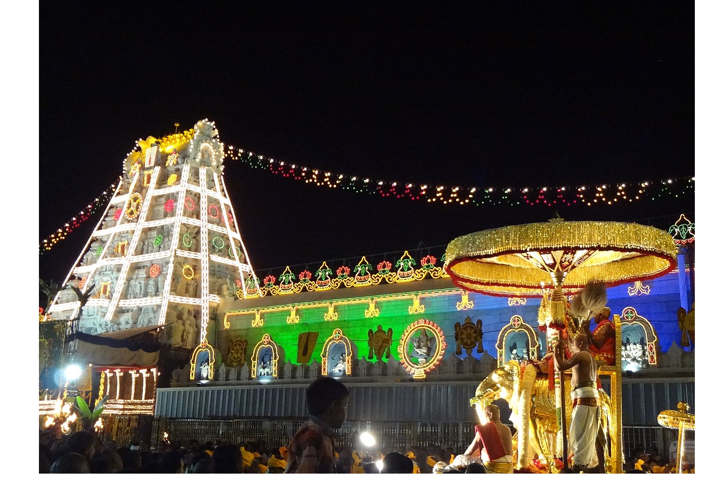

Welcome to Andhra Pradesh
Tirumala is a Hindu religious temple town in Tirupati district of the Indian state of Andhra Pradesh. It is one of the neighbourhoods of the Tirupati city. The town is a part of Tirupati Urban Development Authority and located in Tirupati (urban) mandal of Tirupati revenue division. The town is strictly vegetarian. It is a hill town where Tirumala Venkateswara Temple is located, a popular shrine of Vishnu. Vishnu is believed to reside here with his full power, as in Vaikuntha, and thus the place is also called 'Bhuloka Vaikuntha'.
